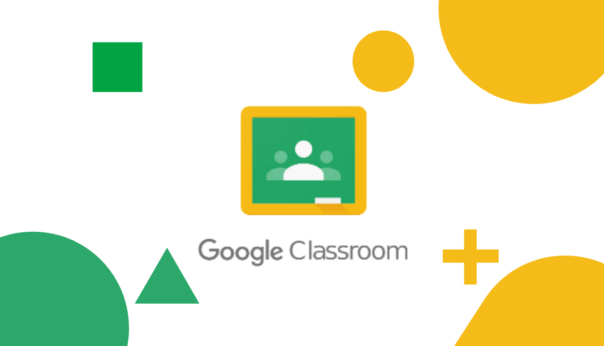

Benefícios dos Celulares na Educação
Os smartphones oferecem acesso instantâneo a uma vasta gama de recursos educacionais, transformando a maneira como os alunos aprendem. Eles podem ser usados para:
- Acessar aplicativos educacionais: Ferramentas como Duolingo para aprendizado de idiomas, Khan Academy para aulas em vídeo e Google Classroom para organização de tarefas escolares.
- Promover a alfabetização digital: Habilidade essencial no mercado de trabalho atual, ajudando os alunos a se familiarizarem com tecnologia desde cedo.
- Facilitar a pesquisa: Os estudantes podem buscar informações em tempo real, como artigos, vídeos e enciclopédias online.
- Incentivar a colaboração: Plataformas como Google Docs e Microsoft Teams permitem que os alunos trabalhem juntos em projetos, mesmo estando em locais diferentes.
Além disso, os celulares tornam o aprendizado mais interativo e personalizado, aumentando o engajamento dos alunos. Por exemplo, gamificação através de apps como Quizlet pode transformar revisões de conteúdo em jogos divertidos.
Exemplos de Aplicativos Educacionais
Veja alguns aplicativos que já estão transformando a educação:
Duolingo


Um aplicativo de aprendizado de idiomas que usa gamificação para ensinar vocabulário e gramática. Os alunos ganham pontos e avançam em níveis, tornando o aprendizado divertido e motivador.
Khan Academy
Oferece milhares de aulas em vídeo gratuitas sobre matemática, ciências, história e mais. Os alunos podem aprender no seu próprio ritmo e praticar com exercícios interativos.
Google Classroom

Uma plataforma que organiza tarefas, permite a entrega de trabalhos e facilita a comunicação entre professores e alunos, tudo diretamente do celular.
Desafios do Uso de Celulares
Apesar dos benefícios, o uso de celulares nas escolas apresenta desafios que precisam ser enfrentados para garantir um ambiente de aprendizado saudável:
- Distrações: Notificações de redes sociais, jogos e mensagens podem desviar a atenção dos alunos durante as aulas.
- Desigualdade de acesso: Nem todos os alunos têm smartphones modernos ou acesso à internet confiável, o que pode ampliar desigualdades educacionais.
- Uso inadequado: Sem supervisão, os celulares podem ser usados para trapacear em provas ou acessar conteúdos impróprios.
- Falta de treinamento: Muitos professores não estão preparados para integrar a tecnologia de forma eficaz, o que pode limitar os benefícios.
Para superar esses desafios, as escolas precisam estabelecer políticas claras, como horários específicos para uso dos celulares e treinamento para professores.
Estudo de Caso: Uma Escola que Adotou os Celulares
Em uma escola secundária em Helsinki, Finlândia, os professores decidiram integrar os celulares ao currículo. Os alunos usam smartphones para:
- Gravar vídeos explicativos como parte de projetos de ciências.
- Participar de quizzes online durante as aulas, usando apps como Kahoot.
- Colaborar em documentos compartilhados para trabalhos em grupo.
Resultados mostram que o engajamento dos alunos aumentou em 25%, e os professores relataram maior interação em sala de aula. No entanto, a escola implementou regras rígidas: os celulares só podem be usados durante atividades específicas, e há penalidades para uso indevido.
Teste Seus Conhecimentos: Quiz Interativo
Qual é um dos principais benefícios do uso de celulares na educação?
Acesso a recursos educacionais
Aumento das distrações
Redução da interação social
Correto! Os celulares oferecem acesso a uma vasta gama de recursos educacionais, como aplicativos e materiais online.
Incorreto! Embora os celulares possam trazer desafios, o principal benefício é o acesso a recursos educacionais.